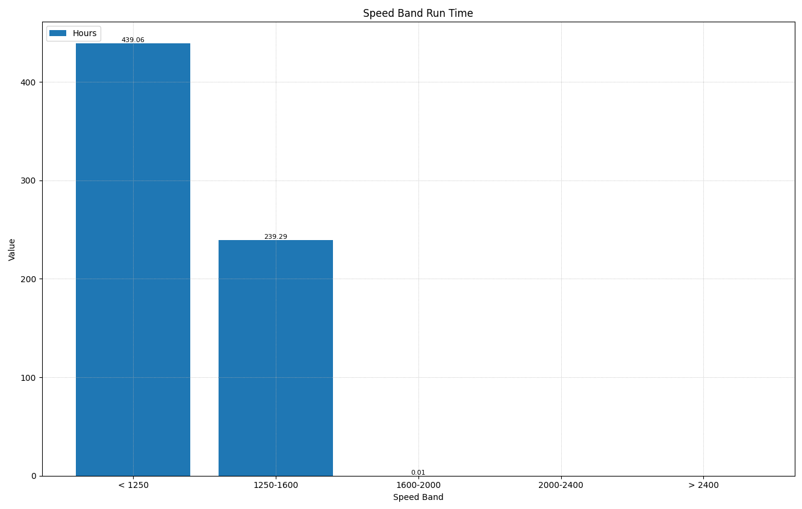

Speed Band
PIDs Used in This Chart
| PID Name | Description | Units |
|---|---|---|
EUD_Engine_run_time_spdbnd1_nvv |
Engine run time in speed band 1 (< 1,250 RPM) | Seconds |
EUD_Engine_run_time_spdbnd2_nvv |
Engine run time in speed band 2 (1,250 – 1,600 RPM) | Seconds |
EUD_Engine_run_time_spdbnd3_nvv |
Engine run time in speed band 3 (1,600 – 2,000 RPM) | Seconds |
EUD_Engine_run_time_spdbnd4_nvv |
Engine run time in speed band 4 (2,000 – 2,400 RPM) | Seconds |
EUD_Engine_run_time_spdbnd5_nvv |
Engine run time in speed band 5 (> 2,400 RPM) | Seconds |
Speed Bands
| Band | RPM Range | Typical Context |
|---|---|---|
| 1 | < 1,250 RPM | Low idle and near-idle operation |
| 2 | 1,250 – 1,600 RPM | Light work, transitional speeds |
| 3 | 1,600 – 2,000 RPM | Moderate load operation |
| 4 | 2,000 – 2,400 RPM | Normal working range |
| 5 | > 2,400 RPM | High RPM / full throttle |
Background
The Speed Band chart shows the machine's lifetime distribution of engine run time across five RPM ranges. Like the Time at EGT chart, this is a static historical view — it reflects the entire operating history stored in the ECU's non-volatile memory and does not animate with the Time Slider.
Engine speed directly affects exhaust gas temperature. Higher RPM means more airflow, more fuel, and hotter exhaust — which is beneficial for aftertreatment system health. An engine that spends most of its life in bands 1 and 2 is an engine running cold, and cold exhaust is one of the most common root causes of premature DPF and SCR failure on compact equipment.
EUD_Engine_idle_time_nvv (dedicated idle counter) to understand how much of the low-RPM time was true stationary idle versus low-speed work.
Why RPM Matters for Aftertreatment
| Benefit of Higher RPM | Description |
|---|---|
| Hotter exhaust | Higher engine speeds generate more heat in the exhaust stream, keeping the DPF, DOC, and SCR catalyst in their effective operating range. |
| Passive DPF regeneration | Continuous passive soot burn-off requires sustained exhaust temperatures above roughly 932°F (500°C). Low-RPM operation rarely reaches this threshold. |
| SCR efficiency | The SCR catalyst converts NOx most efficiently at elevated temperatures. Cold, low-speed operation reduces conversion rates and can cause DEF crystallization. |
| Reduced carbon buildup | Hotter exhaust gases help burn off carbon deposits in the EGR passages, turbocharger, and exhaust manifold. |
| Moisture elimination | Adequate exhaust heat vaporizes condensation in the system, preventing corrosive acid formation from sulfur compounds in the fuel. |
What to Look For

The majority of engine hours fall in bands 3 through 5 (above 1,600 RPM), with some time in band 2 for transitional and light-load work. Band 1 represents a modest fraction of total hours — cold starts, brief idles between tasks, and travel at low throttle.
This distribution indicates the machine is spending most of its life under productive load at RPMs that generate adequate exhaust heat for aftertreatment health.
Band 1 holds a disproportionately large share of total engine hours — the machine is spending the majority of its running time at or near idle. This is the RPM signature of a machine left idling between tasks, used for long warm-up periods, or operated in a low-demand application without adequate loading.